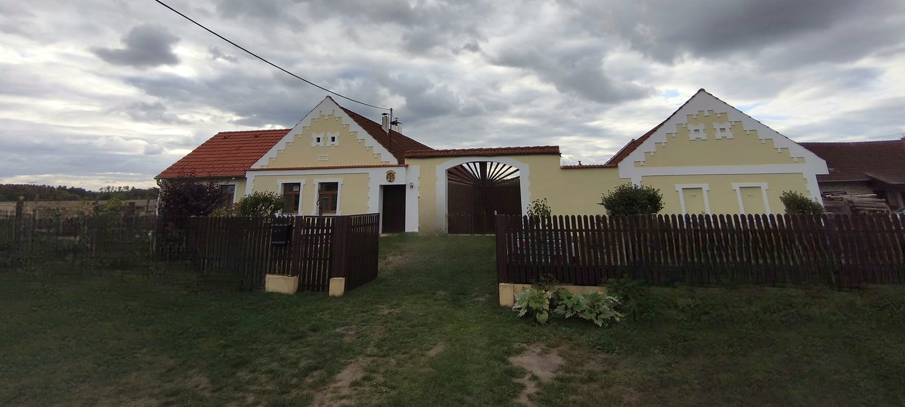
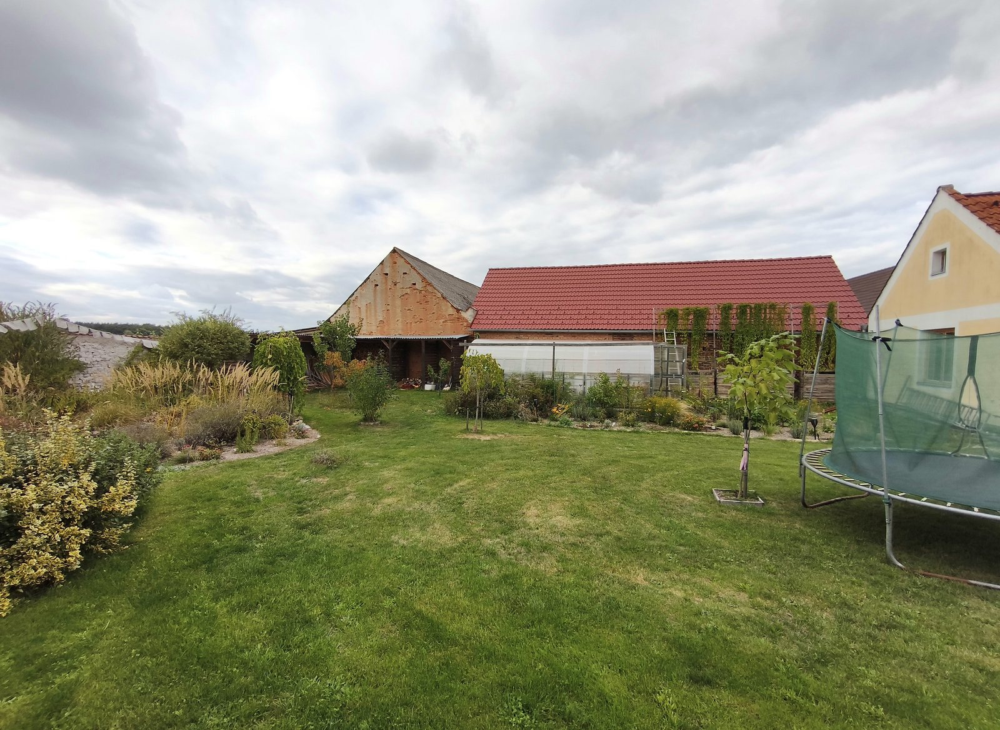
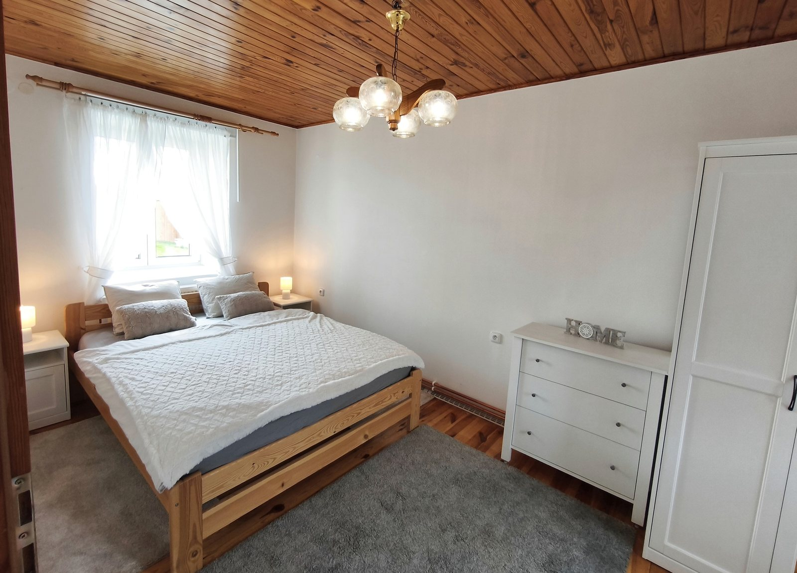

HLEDÁTE NOVÉ BYDLENÍ?
Byt k dlouhodobému
pronájmu.
Zařízený byt 2+kk · 45,37 m² · Frahelž




Vybavená kuchyněObývací pokojLožniceKoupelna a WC
Lednice · Plynový sporák · Trouba · Mikrovlnná trouba · Rozkládací gauč pro příležitostné přespání 2 hostů
Společný dvůr · Parkování až pro 2 vozidla · Uzamykatelné uložení kol
Ústřední topení a vlastní krbová kamna. Zvíře pouze po domluvě.
Malebná, klidná vesnička mezi rybníky – procházky, běh i kolo.
Pěšky: autobus cca 100 m / 2 min, vlak cca 600 m / 9 min. Směr Třeboň, vlak i Veselí n. L.
Celkem za měsíc11 000 Kč
Nájem 10 000 Kč + paušál 1 000 Kč (energie, vodné, stočné a internet).
Frahelž 12 · Prohlídky po telefonické domluvě.
703 982 014 Dostupnost a další podmínky sdělíme po telefonu.ODTRHNĚTE SI KONTAKT
PRONÁJEM · FRAHELŽ 12703 982 014
PRONÁJEM · FRAHELŽ 12703 982 014
PRONÁJEM · FRAHELŽ 12703 982 014
PRONÁJEM · FRAHELŽ 12703 982 014
PRONÁJEM · FRAHELŽ 12703 982 014
PRONÁJEM · FRAHELŽ 12703 982 014